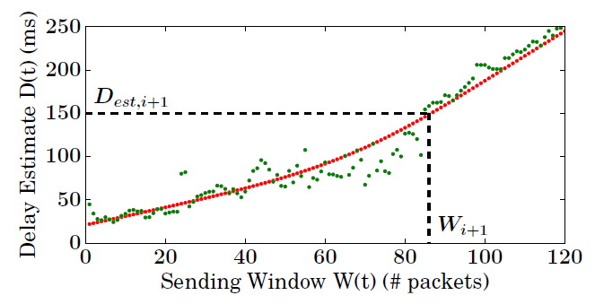

Verus是一种端到端的拥塞控制协议，它根据测量delay来快速反应移动网络的容量变化，而不是去尝试预测移动网络的动态信道。
背景介绍
Verus是一种端到端的拥塞控制协议，它根据测量delay来快速反应移动网络的容量变化，而不是去尝试预测移动网络的动态信道。Verus的关键idea是学习历史数据（delay profile）来得到在一个short epochs内，端到端的packet dealy和outstanding window size之间的关系。然后运用这种关系，观察在short-term内数据报延迟的变化，对window size做出适当的调整。
移动网络信道的难以预测主要有三点：
First, the state of a cellular channel between a mobile device and a base station undergoes several complex state transitions that affect channel availability in short time scales.
Second, the frame scheduling algorithms used in cellular networks cause burstiness in the cellular channel.
Third, while prior work has considered only self-inflicted queuing delay as a cause for high delays, we find that competing traffic does affect end-to-end delay characteristics, especially under high contention or when the cellular channel is near saturation.
通过实验观察到的三点网络特性：
Burst scheduling: Typical traffic characteristics observed at a receiver are highly bursty with variable burst sizes and burst inter-arrival periods. Mobility further amplifies these characteristics.
Competing traffic: When two or more flows contend for radio resources and their sending rates approach network capacity, we observe cross-flow dependencies.
Channel unpredictability: Standard prediction mechanisms even using the most recent samples are far from capturing the bursty behavior of the channel.
Verus协议
Verus从传统的TCP拥塞控制算法中借鉴了一些东西，比如慢开始和丢包后的多路降低（multiplicative decrease），但Verus在发送窗口的增长机制上做了改变。不同于传统的TCP算法在拥塞避免阶段每一个$RTT$，$CWnd$才增1，而Verus增加和降低发送窗口每$\xi$ms——记为epoch，当信道条件允许发送更多的数据包时，verus通过快速增加发送窗口来适应动态改变的无线信道。
在每一个epoch，Verus的发送窗口函数如下：
$$W(t+1) = f(d(t) + \delta(t))$$
这里，$W(t+1)$是下一时刻的发送窗口，$d(t)$是网络延迟，$\delta(t)$是延迟增量（可为负数），$f$是delay profile 函数。
delay profile
Verus通过下面四个步骤来建立delay profile：
Delay Estimator: estimates the network RTT using delay measurements reported from the receiver’s acknowledgments
Delay Profiler: tracks the relationship between delay and sending window that does not cause network congestion
Window Estimator: estimates the sending window using the estimated delay and delay profile
Loss Handler: handles losses and adjusts the sending window
具体建立delay profile的计算过程和公式推导在这里就不详细介绍了，最后会得到下面给出的一张图，这张图反映的是delay estimate和sending window之间的关系。通过当前时刻测得的delay，估算下一时刻的delay，然后根据这张图找出下一时刻的sending window值。

这里只是很简单的介绍了verus的思想， 想要深入了解verus算法的话还是看其paper更好一点，下面会给出这篇paper的地址。
参考文献：
Adaptive Congestion Control for Unpredictable Celler Networks